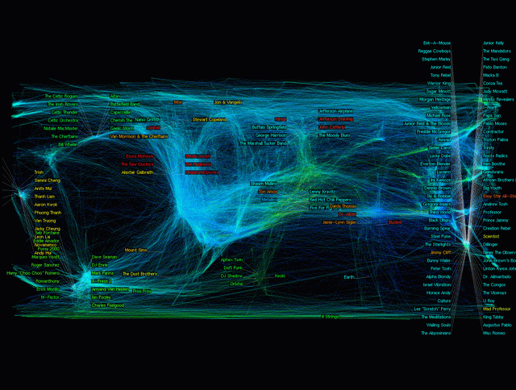

A beautiful visualization of music
One of the most beautiful renderings of the music space is shown in The World of Music by researchers at Standford, MIT and Yahoo!. This visualizations shows 10,000 artists and how they are related to each other. The artist relation data is mined from user ratings of artists in the Yahoo! Music service. They use a technique called semidefinite programming (which is sometimes called Semidefinite embedding) to layout and cluster the data. Semidefinite embedding is a method for mapping high dimensional data into a lower dimensional euclidean vector space.

There's a brief paper on how this visualization was constructed here: The World of Music: SDP layout of high dimensional data
Learn more about: Semidefinite programming
I have been reading your posts on music visualization quite closely and I did not really see the utility of the maping software for ordinary users.
I mean, I listen by genre..and bands...I do have a pretty large personal music collection but the basic genre based organization seems satifactory to me.
Of course if I were an ethno-musicologist or some other researcher wishing to collate differing music styles, such SW would be useful...but on a personal level, for creating playlists..I mean it is nifty the tools can sense similarity...but I just think it seems overkill...
What I mean is, for someone who understands genres, even constructing playlists is a matter of taste and they are highly personalized lists...so would I like another tool to make playlists for me...I dunno...
Posted by Umang Kumar on September 27, 2005 at 04:01 PM EDT #